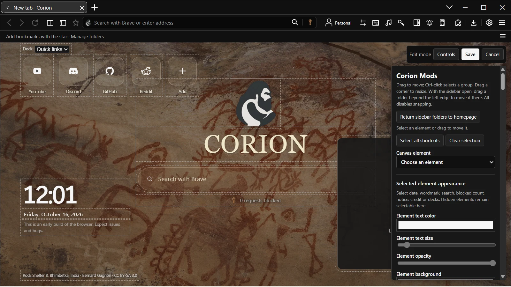

← Back to CorionCORION / FEATURESMAKE IT YOURS KEEP IDEAS CONNECTED
IN CORION 4.0
Built around your everyday.
A personal browser, with practical tools built in.
Your home on the web.
Choose homepage backgrounds, clocks, quick links and toolbar arrangements in Corion Mods. Appearance presets help you find a comfortable place to start.

Space to think.
Browse side by side with split view. Keep page notes and study sessions together, and revisit connections through research trails.
Less searching for your tools.
- Command palette
- Ctrl+K finds actions and tools in one place.
- Unified library
- Ctrl+Shift+L searches local bookmarks, notes, research and saved reading.
- Workspaces
- Save named arrangements and add them back without replacing unrelated tabs.
- Offline reading
- Save extracted article text locally; original websites are opened only when requested.
- Translation
- Confirm before sharing selected text or a page URL with Google Translate.
- Performance modes
- Choose tab sleeping, preview and motion settings together.